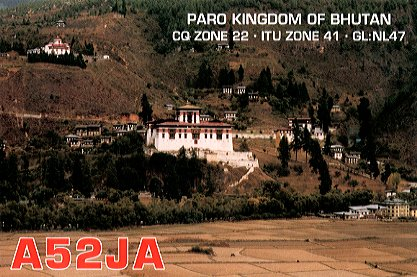

Flash ! DX
Comoros 2001
【 Back Issues Jan.2001】 TIME:UTC(JST-09:00) Report from JA1RJU (PM95sq)
31.Jan.2001(15:00c) *ZL-TV 00:00- 45.24/25/26-- weak *VK-TV 00:00- 46.172 -- *9M-TV 04:00- 48.240/260 -- 9M2TO/B 05:50- 50.005 CW Beacon 30.Jan.2001(15:00d) *VK-TV 03:00- 46.172 -- *VK-TV 04:30- 46.240 --
| ◎ 日中のコンデションは"日替わり"で上下していて安定しないが、クラスターには南米→ヨーロッパ間のQSOのリポートが目立つ様になった。 この伝搬が頻繁になり沖縄からPY(ブラジル)がオープンし始めると、JA本土でもロングパスの季節となるのだが、 その前に夜間のTEPがもう少し上昇してくれないことにはまだ期待は出来ない。ちなみに昨年の初ロングパスは2月28日のCT3HF、EH8BYRの入感だった。 |
29.Jan.2001(15:00f)
*ZL-TV 00:00- 45.250/260 -- weak
*VK-TV 00:00- 46.172/240 -- weak
*ZL-TV 06:00- 45.24/25/26--
FK1TK 06:09 50.110/120 SSB
ZL2AGI 06:15 50.110 CW
ZL2TPY 06:28 50.110/135 SSB
ZL2KT 06:47 50.110/140 SSB
VK3DUT 06:55 50.110/125 SSB
*ZL-TV 07:00- 50.750 FM ZL-TV Audio
28.Jan.2001(15:00e)
*VK-TV 00:00- 46.240 --
*VK-TV 02:30- 46.172/240 --
*ZL-TV 05:30- 45.24/25/26-- weak
27.Jan.2001(15:00e)
*ZL-TV 00:30- 45.24/25/26-- weak
*VK-TV 02:30- 46.172/240 --
*9M-TV 05:00- 48.240/260 --
VK4KJL 05:14 50.110 SSB
VK4KK 05:15 50.110 SSB/CW
V73SIX 05:45- 50.014 CW Beacon
26.Jan.2001(15:00f)
*9M-TV 01:00- 48.250 --
9M6SMC 01:20- 50.014.4 CW Beacon
*9M-TV 02:00- 48.240/260 --
*BY-TV 02:20 49.750 --
*VK-TV 02:30- 46.172/240 --
9M2TO/B 05:05- 50.005 CW Beacon
VR2ZXC 06:50 50.110 SSB
9M2TO/B 06:52- 50.005 CW Beacon
25.Jan.2001(15:00f)
*VK-TV 23:00- 46.172/240 --
*ZL-TV 23:00- 45.24/25/26--
*BY-TV 23:00 49.750 -- SC(South)
V73SIX 23:10- 50.014 CW Beacon
VK2BDT 23:18 50.110 SSB
VK3DUT 23:19 50.110 SSB
VK2TQD 23:20 50.110 SSB
VK3XQ 23:30 50.110 CW
VK2BHO 23:30 50.110 CW
VR2XMT 23:44 50.110/120 SSB SC(South)
VK3DUT 23:58 50.110 SSB
VK4FNQ 00:02 50.110/120 SSB
VK3DQJ 00:05 50.110 SSB
VK4ZJR 00:09 50.110 SSB
VK2QF 00:13 50.107 CW
*9M-TV 00:15- 48.240/260 -- Direct path
9M6SMC 00:17- 50.014.4 CW Beacon
*VK-TV 02:30- 46.172/240 --
*ZL-TV 02:30- 45.24/25/26--
VK2DN 03:41 50.110 CW
VK3DQJ 03:56 50.110 SSB/CW
ZL3TY 04:25 50.110 SSB
ZL3TIC 04:28 50.110 SSB
ZL3SIX 04:30- 50.040 CW Beacon
VK8VF 12:00- 50.057 CW Beacon
|
◎ 早い時間帯からVK、ZLの入感があったものの、信号は弱くコンデションも不安定で長続きしない。
午前中に近場のDXと国内のスキャッターが南方向から聞こえる様になったので、いよいよ春のDXシーズンも間近か？。
◎ 昨年暮れにNauruから運用したC21JH(VK2GJH)・Jackからの報告によると、現在までにQSOの70％にあたる489枚のQSLの発送が終わったとの事。 C21JHのQSL請求の封筒の中に、1998/99年当時のT30JHのQSLを同封しているものがあり、このQSLについてはまだ保留されている。 QSLの請求時には異なるコールサインのQSLは同封しないでほしい(...one callsign per envelope)と。 |

24.Jan.2001(15:00d)
*ZL-TV 06:00- 45.24/25/26--
VK8VF 13:10- 50.057 CW Beacon
| ◎ 日中のコンデションは完全に落ち込んだまま。この傾向は世界的なもので、 ここ2、3日クラスターにリポートされるQSOは、EU→SAなどの別大陸間の伝搬はほとんど見られない。 |
23.Jan.2001(15:00d)
*ZL-TV 02:40- 45.250 --
*ZL-TV 04:20- 45.240/250 --
4W6UN 12:50- 50.097 CW Beacon
22.Jan.2001(15:00e)
*BY-TV 00:00- 49.750 -- SC(South)
*VK-TV 00:20- 46.240 --
VK3DQJ 00:33 50.110 CW
*9M-TV 03:00- 48.240/260 --
9M2TO/B 03:20- 50.005 CW Beacon
VK3XQ 03:44 50.110 CW
21.Jan.2001(15:00f)
*ZL-TV 02:00- 45.24/25/26--
ZL2TPY 03:09 50.110 SSB
*ZL-TV 03:10- 50.750 FM ZL-TV Audio
ZL3GS 03:24 50.110/130 SSB
ZL3TIC 03:25 50.110/120 SSB
ZL3SIX 03:25- 50.040 CW Beacon
ZL4WA 03:27 50.120/125 SSB/CW
ZL3TY 03:28 50.110 SSB
ZL2AGI 03:29 50.110 SSB/CW
ZL3JT 03:30 50.110/100 CW
ZL3NW 03:36 50.160 SSB
ZL3DAC 03:46 50.110/170 SSB
ZL3FOX 03:50 50.190 SSB
ZL3GS 03:58 50.105 CW
*VK-TV 04:00- 46.172/240 --
ZL4WA 04:10 50.110 CW/SSB
ZL3TY 04:12 50.110/170 SSB
*9M-TV 07:20- 48.240/260 --
V73AT 10:35 50.110 CW
*VK-TV 13:30- 46.172 --
| ◎ 昼過ぎから強力なZL'sが約1時間オープン。VKへのコンデション移行も期待されたが、VK-TVが短時間上昇しただけで終わった。 |
20.Jan.2001(15:00e)
*ZL-TV 00:40- 45.250 -- weak
*VK-TV 06:00- 46.240 --
*9M-TV 07:30- 48.240/260 --
9M2TO/B 07:45- 50.005 CW Beacon
*BY-TV 08:00- 49.750 --
19.Jan.2001(15:00d)
| ◎ 一昨日、昨日とVK/ZLの入感でコンデションの上昇が感じられたが、今日は朝から45/46/48MHz帯のTVも入感しないほど落ち込んでしまった。 |
18.Jan.2001(15:00f)
*ZL-TV 03:30- 45.24/25/26--
ZL1VHF 04:48- 50.042 CW Beacon
*ZL-TV 04:50- 50.750 FM TV Audio
ZL2KT 04:50 50.120 SSB
ZL1TMF 04:53 50.120 SSB
ZL2TPY 04:53 50.120/135 SSB
*9M-TV 06:00- 48.240/260 --
9M2TO/B 06:45- 50.005 CW Beacon
ZL3SIX 07:05- 50.040 CW Beacon
V73SIX 07:05- 50.014 CW Beacon
ZL3TY 07:05 50.110 CW
V73AT 07:14 50.110 SSB
ZL3NW 07:14 50.110 SSB
*BY-TV 08:00- 49.750 --
VR2LC 09:19 50.110 CW
|
◎ T88DX(Palau)運用報告 [JI3DLI・藤原 健志] この正月にパラオ(Palau)からT88DXを運用したJI3DLI・藤原さんのリポートです。 T88DXは、パラオの首都コロールのVIPホテルから、このホテルのオーナーのT88GNの設備(TS-690+160W AMPと20mH 6el Yagi)をお借りして運用しました。 期間中のHF+50MHz帯の全交信数は3,181でした。 50MHzのオープンは1月3日の16:04-17:26LMT(註・パラオは日本と時差の無い唯一の外国)で、 主に東日本を中心としたものでした。内訳はSSBが76、CWが7 QSOでした。 あいにく現地では日中のノイズレベルが高く(S7程度)、他にも呼んで頂いた局が分かっていたのですが、 ピックアップ出来ず、申し訳けなく大変残念でした。 帰国した私を待っていたのはブルガリア(Bulgaria)のLZ2DF・Mikeからの興味深いメールでした。 それは、1月3日、08:00zに50.115MHzでT88DXのCWをRST339で受信した、と言うものでした。 彼は3回ほどリポートを送ったとの事でしたが、T88DXの電波がヨーロッパまで飛んでいたとは驚きです。 この局の設備(IC-706+AMPと20mH 10el)と海抜 1,710mのロケーションを考えれば、 多分パラオにもヨーロッパの信号が入感していたはずなのですが、ノイズレベルが高かったのが恨めしく思われます。 詳細はT88DXを参照。 (TNX T88DX/JI3DLI) |
17.Jan.2001(15:00h)
*ZL-TV 00:00- 45.24/25/26-- weak
*VK-TV 00:00- 46.172/240 --
VK3SIX 00:25 50.110 CW
*ZL-TV 02:30- 45.24/25/26--
*9M-TV 03:00- 48.240/260 --
ZL3SIX 03:10 50.040 CW Beacon
9M2TO/B 04:25- 50.005 CW Beacon
VK3OT 04:40 50.110 SSB
VK3GJW 04:47 50.125 SSB
VK5RO 04:54 50.125/135 SSB/CW
VK3XQ 04:56 50.135 SSB/CW
VK2ZXC 05:06 50.110 SSB
VK4KR 05:22 50.110 SSB
VK3AUI 05:23 50.110/145 SSB
VK2YOC 05:26 50.110 SSB
VK4BLK 05:38 50.110 CW
VK4BIT 05:42 50.110 SSB
*BY-TV 07:00- 49.750 --
9M2TO/B 07:15- 50.005 CW Beacon
VR2ZST 08:50 50.130 SSB
VR2XVD 08:57 50.140 SSB
9M2TO/B 09:15- 50.005 CW Beacon
| ◎ 朝方に短いVK3のオープン。午後から再びVK2、3、４、5が入感してきたが、これらのVKも入感しているエリアは狭く、 各エリアを渡り歩く様な不安定なオープンだった。 |
16.Jan.2001(15:00d)
*ZL-TV 02:00- 45.24/25/26--
*VK-TV 03:30- 46.172/240 --
*9M-TV 06:30- 48.240/260 --
9M2TO/B 06:30- 50.005 CW Beacon
|
◎ 1月も中旬を過ぎ、コンデションの上昇を期待したいところだが、まだ6mは"冷え込んだ"まま。
僅かながらHF帯の入感状況は変わってきているので、もう少しの辛抱か。 2月以降、コンデションの上昇に合わせてD68、YK、PY0、CE0、3D2/Cなど多くのDXpeditionが予定されている。 2001年の春、秋のシーズンはサイクル23の最後のチャンスと考えられるので大いに期待したい。 |

2000年秋にW9VAが運用したPY0FF(Fernando de Noronha)は
入感したが、2月のPY0(St.Peter & St.Paul Rocks)は？
15.Jan.2001(15:00e)
*ZL-TV 01:00- 45.24/25/26--
*9M-TV 05:00- 48.240/260 --
9M2TO/B 05:40- 50.005 CW Beacon
14.Jan.2001(15:00e)
*ZL-TV 05:00- 45.240 --
*9M-TV 07:00- 48.240/260 --
9M2TO/B 07:10- 50.005 CW Beacon
*9M-TV 08:30- 53.740/760 WFM 9M-TV Audio Strong!
13.Jan.2001(15:00f)
*VK-TV 02:30- 46.172/240 --
*ZL-TV 04:30- 45.24/25/26--
*9M-TV 05:00- 48.240/260 --
V73SIX 05:40- 50.014 CW Beacon
9M2TO/B 06:10- 50.005 CW Beacon
KH0/JA1XGI 07:46 50.115 SSB/CW
| ◎ 45/46MHz帯のTV信号は強力に入感してくるが、なかなか50MHz帯までコンデションは上昇してこない。 午後から3,000-5,000mの中距離のコンデションが上昇。 |
12.Jan.2001(15:00d)
*VK-TV 02:00- 46.240 --
*ZL-TV 02:00- 45.24/25/26--
*9M-TV 05:00- 48.240/260 --
*BY-TV 05:00- 49.750 --
9M2TO/B 05:15- 50.005 -- Beacon weak
VR2LC 09:10 50.170 SSB
VR2KR 09:23 50.110 CW
9M2TO/B 09:25- 50.005 -- Beacon weak
11.Jan.2001(15:00d)
*VK-TV 00:00- 46.172 --
*ZL-TV 02:00- 45.250/260 -- weak
*9M-TV 06:00- 48.240/260 --
10.Jan.2001(15:00f)
*VK-TV 01:30- 46.240 --
*ZL-TV 03:20- 45.24/25/26--
*VK-TV 03:20- 46.172/240 --
ZL3TY 05:15 50.110 CW
ZL3SIX 05:15- 50.040 CW Beacon
VK5RO 05:42 50.110 CW
DU1EV 07:52 50.110 CW
DU1EGA 08:40 50.110 CW
9M6SMC 08:45- 50.014.3 CW Beacon
| ◎ 午後から45/46MHz帯のTV信号は強力に入感してくるが、MUFは50MHz帯スレスレのため、 50MHzがオープンしても入感時間は短く、不安定。 |
09.Jan.2001(15:00f)
*ZL-TV 00:20- 45.250 --
*VK-TV 03:30- 46.172/240 --
*9M-TV 05:00- 48.240/260 --
9M2TO/B 05:30- 50.005 CW Beacon
4W6UN/B 06:35 50.097 CW Beacon
9M2TO/B 08:00- 50.005 CW Beacon
08.Jan.2001(15:00h)
*ZL-TV 02:30- 45.24/25/26--
*VK-TV 03:00- 46.172/240 --
VK4TZL 05:20 50.110/150 SSB
VK4CP 05:20 50.125 SSB
VK4EMA 05:21 50.135 SSB
VK4RGG 05:25- 50.058 CW Beacon
VK2FHN 05:26 50.106/125 CW/SSB
VK2TQP 05:28 50.125/130 SSB
VK2EDB 05:38 50.115 SSB
VK4ARN 05:41 50.120/155 SSB
VK2XN 05:45 50.125 SSB
VK2OM 06:11 50.110 SSB
VK4KR 06:15 50.110 SSB
VK2YOC 06:17 50.110/140 SSB
VK2BHO 06:24 50.110/103 CW
VK2TQD 06:25 50.125/160 SSB
VK4BLK 06:28 50.155 SSB
VK2PB 06:46 50.110/130 SSB
VK2TQP 07:02 50.130 SSB
VK4CV 07:06 50.110 SSB
VK2DN 07:12 50.110 CW/SSB
| ◎ 午後から久しぶりにVK2、VK4が強力にオープン。入感エリアはシドニー(VK2)付近を中心とした狭い範囲で、 VK4のBeaconもVK2に近いVK4RGG(50.058MHz)だけ。 |
07.Jan.2001(15:00d)
*ZL-TV 00:35- 45.24/25/26--
V73SIX 00:35- 50.014 CW Beacon
(PY5CC 01:42 50.110 SSB JR6)
*VK-TV 03:00- 46.172/240 --
| ◎ 午前中から45MHz帯のZL-TVが上昇してコンデションの回復が感じられたが、1エリアでは50MHz帯の信号は認められなかった。 このコンデションの中、01:42zにJR6VSP(沖縄)の入感がPY5CCからクラスターにリポートされている。 |
06.Jan.2001(15:00c)
|
◎ 45/46MHz帯のTVも上昇して来ない静かなコンデション。
◎ C21JH(Nauru)のQSL
P.O.Box 299 Ryde,NSW,1680 Australia |
05.Jan.2001(15:00f)
*ZL-TV 00:00- 45.24/25/26--
*VK-TV 03:00- 46.240 --
ZL-TV 03:20- 50.750 FM ZL-Audio
ZL3TY 03:22 50.110 CW
ZL3TY 03:54 50.110 CW
ZL3SIX 03:55- 50.040 CW Beacon
ZL3JT 04:00- 50.110 CW
*9M-TV 04:00- 48.24/25/26--
| ◎ 昨年は年始にVK、ZLが大量に入感して賑わったが、今年は今日が初めてのZL入感となった。 この入感も長続きせず地域差のある不安定なコンデションだった。 |
04.Jan.2001(15:00c) *VK-TV 03:30- 46.172/240 -- *VK-TV 11:30- 46.172 --
| ◎ 夜遅くまでVK-TVが入感していたが、50MHz帯までコンデションは上昇してこない。 正月"三が日"は昨年に比べ低調だった。 |
03.Jan.2001(15:00e)
*VK-TV 05:30- 46.172/240 --
*9M-TV 06:00- 48.240/260 --
VR2XVD 06:03 50.110/145 SSB
VR2IL 06:05 50.125 SSB
N7ET/DU7 06:34 50.110 CW
T88DX 08:10 50.115 SSB
| ◎ 2001 54th QSO PARTY (1/2 09:00JST-1/3 21:00JST) |
02.Jan.2001(15:00d)
*VK-TV 03:00- 46.172 --
*9M-TV 06:00- 48.240/260 --
01.Jan.2001(15:00c)
*VK-TV 02:00- 46.172 --
*9M-TV 04:00- 48.24/25/26--
9M2NK 05:02 50.107 CW
9M2TO/B 05:05- 50.005 CW Beacon
VR2XMT 05:10 50.110/160 SSB
VR2ZST 05:14 50.120/150 SSB
VR2IL 05:15 50.130 SSB
VR2YRC 05:16 50.120 SSB
BG7OH 05:20 50.135 SSB
9M2NK 06:32 50.107 SSB
VK6RPH 08:20- 50.066 CW Beacon
| ◎ 午後から大陸方向のコンデションが上昇。VR2's、BG7、9M2、VK6'sが強力に入感。 |
